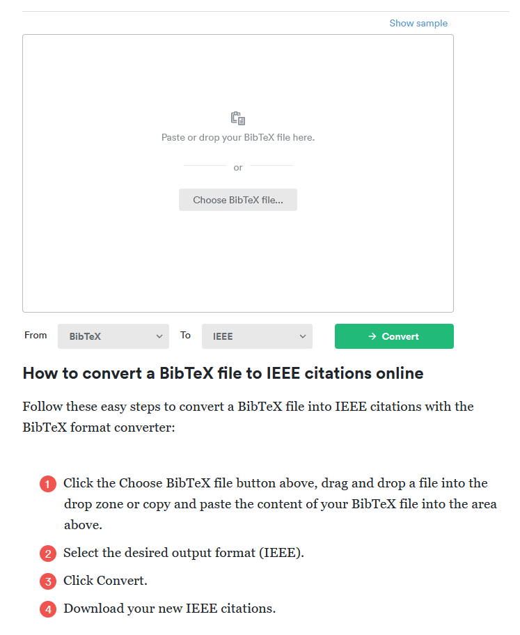

Create Standard Reference with BibTeX
This guide will show you how to create a standard reference word style with BibTeX and showcase with Institute of Electrical and Electronics Engineers (IEEE) format.
Problem
When writing a paper, you want to have the correct format of reference in the paper.
Background
BibTeX is a file format aims to help with managing references in LaTeX documents, and is frequently used in academic writing. It is sort of like JSON format, acting as the standard format to be easily converted into other reference formats.
BibTeX file has the following structure: (filename with ".bib" extension)
Indentation is not necessary, but it is recommended for readability.
Solution
Step 1: Create a BibTeX file
- Create a new file with ".bib" extension, e.g. "reference.bib":
- Copy BibTeX from website:
- IEEE Xplore:
- Find the paper you want to cite.
- Click "Cite This" and select "BibTeX".
- Click "Copy" and paste it into the ".bib" file.
- Research Gate:
- Find the paper you want to cite.
- Click "Download citation".
- Select "BibTeX" from "What type of file do you want?".
- Click "Copy to clipboard" and paste it into the ".bib" file.
- Other websites:
- Find the paper you want to cite.
- Look for citation options. If none, you can manually create the BibTeX entry.
- IEEE Xplore:
- Example of frequent types of BibTeX entries:
Website Reference@misc{tpm12, title = {{TPM} Main Specification version 1.2}, howpublished = {\url{https://trustedcomputinggroup.org/resource/tpm-main-specification/}}, author = {Trusted Computing Group}, year = {2004}, note = {Accessed: 2024-04-01}}IEEE Xplore Reference@INPROCEEDINGS{5368926, author={Qingyu, Ou and Fang, Luo and Kai, Huang}, booktitle={2009 International Conference on Multimedia Information Networking and Security}, title={High-Security System Primitive for Embedded Systems}, year={2009}, volume={2}, number={}, pages={319-321}, keywords={Embedded system;Computer security;Information security;Reliability engineering;Programmable logic arrays;Programmable logic devices;Automatic control;Control systems;Embedded computing;Hardware;secure embedded;TrustZone;TPM;Programmable Logic}, doi={10.1109/MINES.2009.48}}Research Gate Reference@inproceedings{ima, author = {Sailer, Reiner and Zhang, Xiaolan and Jaeger, Trent and van Doorn, Leendert}, year = {2004}, month = {01}, pages = {223-238}, title = {Design and Implementation of a TCG-based Integrity Measurement Architecture.}}Article@article{8274922, author={Meng, Weizhi and Tischhauser, Elmar Wolfgang and Wang, Qingju and Wang, Yu and Han, Jinguang}, journal={IEEE Access}, title={When Intrusion Detection Meets Blockchain Technology: A Review}, note={\href{https://ieeexplore.ieee.org/document/8274922}{https://ieeexplore.ieee.org/document/8274922}}, year={2018}, volume={6}, number={}, pages={10179-10188}, doi={10.1109/ACCESS.2018.2799854}}TechreportIf more fields or typees are needed, you can visit https://bibtex.eu/ for more information.@techreport{McAfee_next_gen_IDS, author={Fengmin Gong}, title={McAfee Network Security Platform: The Next-Generation Network IPS}, note={\href{http://www.webtorials.com/main/resource/papers/McAfee/paper3/next-generation-network-ips.pdf}{http://www.webtorials.com/main/resource/papers/McAfee/paper3/next-generation-network-ips.pdf}}, year={2003}, address={San Jose, 6220 America Center Drive, United States}, organization={McAfee Network Security Platform}} - Format special cases:
- Traditional chinese authors' names should be written in the format "Firstname Lastname" with no comma in between, e.g.
author={<firstname1> <lastname1> and <firstname2> <lastname2> and <firstname3> <lastname3>} - If you want to prevent title or author from being shortened/processed, you can use curly braces to wrap the text, e.g.
title={{This is a long title THAT wON't be FORMATED}}. - If your referencing material haven't been published yet or any other situation, you can use
yearfield to indicate the year of the material, e.g.year={in press}.
- Traditional chinese authors' names should be written in the format "Firstname Lastname" with no comma in between, e.g.
- Example of final form of your ".bib" file can be found in my GitHub.
Step 2 Option 1: Use LaTeX template
If your publisher provides a LaTeX template, you can use it to generate the absolute correct format of the reference. Following steps will use IEEE conference template as example:
- Download the IEEE conference template from the website.
- Extract the zip file and find the
.texfile. Open it with a text editor, in my case, I use TeXworks. (after installing miktex, you will have TeXworks installed) - Copy your BibTeX file into the same folder as the
.texfile. - Remove content after
\section{Introduction}and before\end{document}to make it a clean template. - Add following two lines before
\end{document}to include BibTeX file: - Use
\cite{<citation_key>}to cite at least one reference in the.texfile after\section{Introduction}and before\bibliographystyle{IEEEtran}. - Escape special characters in the BibTeX file, e.g.
_should be written as\_. - Compile the
.texfile, and you will see the reference list at the end of the paper. - If you are using MS Word, you can copy from the PDF file and paste it into your Word document.
- Results: (can compile)
- Following is an example of the final form of your ".tex" file: Download conference_101719.tex
Code in conference_101719.tex
\documentclass[conference]{IEEEtran} \IEEEoverridecommandlockouts % The preceding line is only needed to identify funding in the first footnote. If that is unneeded, please comment it out. \usepackage{cite} \usepackage{amsmath,amssymb,amsfonts} \usepackage{algorithmic} \usepackage{graphicx} \usepackage{textcomp} \usepackage{xcolor} \def\BibTeX{{\rm B\kern-.05em{\sc i\kern-.025em b}\kern-.08em T\kern-.1667em\lower.7ex\hbox{E}\kern-.125emX}} \begin{document} \title{Conference Paper Title*\\ {\footnotesize \textsuperscript{*}Note: Sub-titles are not captured in Xplore and should not be used} \thanks{Identify applicable funding agency here. If none, delete this.} } \author{\IEEEauthorblockN{1\textsuperscript{st} Given Name Surname} \IEEEauthorblockA{\textit{dept. name of organization (of Aff.)} \\ \textit{name of organization (of Aff.)}\\ City, Country \\ email address or ORCID} \and \IEEEauthorblockN{2\textsuperscript{nd} Given Name Surname} \IEEEauthorblockA{\textit{dept. name of organization (of Aff.)} \\ \textit{name of organization (of Aff.)}\\ City, Country \\ email address or ORCID} \and \IEEEauthorblockN{3\textsuperscript{rd} Given Name Surname} \IEEEauthorblockA{\textit{dept. name of organization (of Aff.)} \\ \textit{name of organization (of Aff.)}\\ City, Country \\ email address or ORCID} \and \IEEEauthorblockN{4\textsuperscript{th} Given Name Surname} \IEEEauthorblockA{\textit{dept. name of organization (of Aff.)} \\ \textit{name of organization (of Aff.)}\\ City, Country \\ email address or ORCID} \and \IEEEauthorblockN{5\textsuperscript{th} Given Name Surname} \IEEEauthorblockA{\textit{dept. name of organization (of Aff.)} \\ \textit{name of organization (of Aff.)}\\ City, Country \\ email address or ORCID} \and \IEEEauthorblockN{6\textsuperscript{th} Given Name Surname} \IEEEauthorblockA{\textit{dept. name of organization (of Aff.)} \\ \textit{name of organization (of Aff.)}\\ City, Country \\ email address or ORCID} } \maketitle \begin{abstract} This document is a model and instructions for \LaTeX. This and the IEEEtran.cls file define the components of your paper [title, text, heads, etc.]. *CRITICAL: Do Not Use Symbols, Special Characters, Footnotes, or Math in Paper Title or Abstract. \end{abstract} \begin{IEEEkeywords} component, formatting, style, styling, insert \end{IEEEkeywords} \section{Introduction} \cite{tpm12} \cite{ima} \cite{tpm20} \cite{5234829} \bibliographystyle{IEEEtran} \bibliography{reference} \end{document}- Following is an example of the final form of your ".bib" file: Download reference.bib
Code in reference.bib
@misc{tpm12, title = {TPM Main Specification version 1.2}, howpublished = {\url{https://trustedcomputinggroup.org/resource/tpm-main-specification/}}, author = {{Trusted Computing Group}}, year = {2004}, note = {Accessed: 2024-04-01}} @misc{tpm20, title = {TPM 2.0 Library Specification}, howpublished = {\url{https://trustedcomputinggroup.org/resource/tpm-library-specification/}}, author = {{Trusted Computing Group}}, year = {2014}, note = {Accessed: 2024-04-01}} @inproceedings{ima, author = {Sailer, Reiner and Zhang, Xiaolan and Jaeger, Trent and van Doorn, Leendert}, year = {2004}, month = {01}, pages = {223-238}, title = {Design and Implementation of a TCG-based Integrity Measurement Architecture.}} @INPROCEEDINGS{5234829, author={Weiwei Fang and Changsheng Zhou and Ying Zhang and Liang Zhang}, booktitle={2009 2nd IEEE International Conference on Computer Science and Information Technology}, title={Research and application of trusted computing platform based on portable TPM}, year={2009}, volume={}, number={}, pages={506-509}, keywords={Computer applications;Portable computers;Protection;Information security;Data security;Random number generation;Information science;Hardware;Cryptography;Computer industry;trusted computing;trusted root;trusted chain;TPM;TSS}, doi={10.1109/ICCSIT.2009.5234829}}- Compiled PDF: See conference_101719.pdf
- ZIP of this example project: Download bibtex_option1.zip
Step 2 Option 2: Conversion Online.
Note: This method doesn't guarantee the correct format of the reference. You need to verify it with the template provided by the conference or journal.
There are many online tools that can convert BibTeX file into your desired format. In this case, we will use IEEE format.
- Go to BibTeX to IEEE converter.
- Click "Choose BibTeX file..." and select your BibTeX file.
- Click "\(\rightarrow\) Convert" and download the converted file in "Word" format.
- Now you can copy and paste the references into your paper.
 Figure 1: BibTeX to IEEE converter.
Step 2 Option 3: Use in LaTeX (general method)
- Before using citations in LaTeX, you need to set document class and include additional setting in your "./tex" file:
- When you want to cite a reference in your paper, you can use the citation key to refer to the reference: The LaTeX engine will automatically generate reference numbers in the paper like "[1]" in the correct order.
- When you want to list out all the references at the end of the paper, you can use the following command:
- Example of final form of your ".tex" file can be found in my GitHub.
- (optional) If you are looking for a LaTeX compiling script on Windows, you can check the following ones:
- auto-compile.ps1
- md_gen_pdf.ps1
- md_gen_pdf2.ps1
Or you can use the compiler in your LaTeX editor.
Step 3: Re-Check
All conferences and journals should have provided a template for you to use. Make sure to verify the format of the reference with the template. If no template is provided, you can always use previous published papers to verify.
Reference
- https://www.bibtex.org/
- https://bibtex.eu/
- https://tex.stackexchange.com/questions/99404/using-references-to-a-bib-file-when-using-ieeetran
Error Correction
If you find any mistakes in the document, please create an Issue or a Pull request or leave a message in Discussions or send me a mail directly with the mail icon at the bottom right. Thank you!